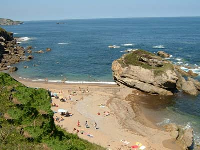
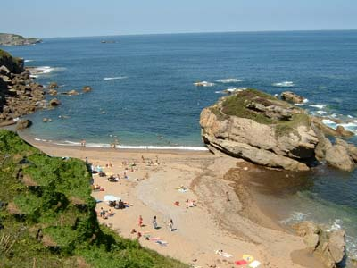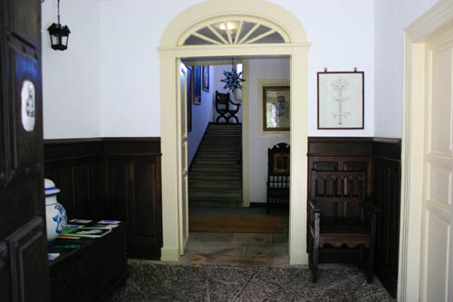
ENTRADA ACTUAL
En la casa grande hemos hecho un pequeño hotel, en realidad clasificado como Casa de Aldea, de cinco más una habitaciones dobles con baño y tamaños dispares pero siempre generosos. Todas tienen algún mueble antiguo provinente de la familia. Se ha conservado el suelo de grandes tablones de castaño y prácticamente la división original que data del año 1852, como recoge la baldosa-recordatorio que se encuentra en la entrada. Respecto a esto, quiero comentar que esta fecha no es la de construcción de la casa, si no la del enganche del agua corriente, la electricidad y, como he dicho antes su última distribución.
CONEXION A INTERNET VIA WI-FI EN TODO EL HOTEL
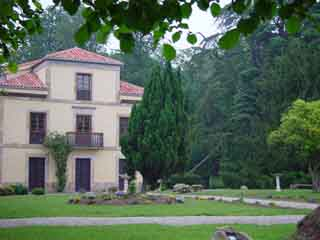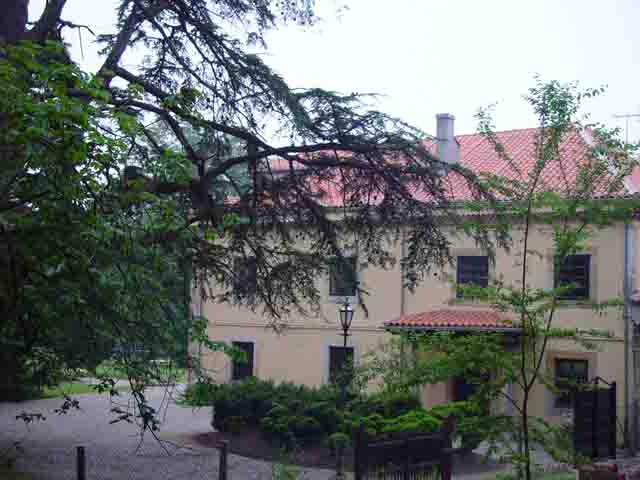
La Casa cuenta con una habitación especial que será siempre para las parejas que decidan celebrar su boda con nosotros. Es la antigua habitación principal de la casa, en concreto la que tiene un balcón al exterior y una ventana a la izquierda de este. Consta de un recibidor y un dormitorio con baño y no tendrá precio adicional. El resto es de acceso público en todo momento.
ALREDEDORES
En un radio de 5 Km. de la finca se puede encontrar muchas actividades que realizar. Tanto de mar como de tierra:
Deportes náuticos con las virginales playas de La Ñora y Estaño como representación de las típicas playitas norteñas.
Paseos a caballo, circuitos de bicicleta de montaña, senderismo por las rutas costeras e interiores
Jugar al golf en múltiples campos, al Croquet o al tenis.
Penetrar en la tierra visitando la cueva de Peón y sus colonias de murciélagos
El jardín botánico, el monte de Deva, la Universidad Laboral.....
PLAYA DE LA ÑORA PLAYA DE ESTAÑO
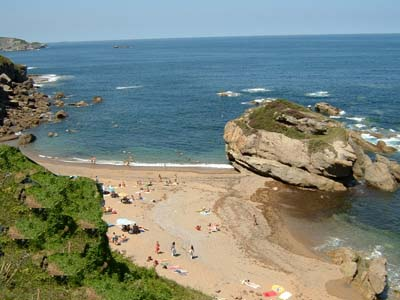
PRECIOS:
HABITACIÓN DE LA ABUELA (Suite Nupcial): Gratis para todos los que se casen en la Quinta (noche de bodas)
RESTO DE LAS HABITACIONES:
Temporada baja (15 Septiembre - 15 Junio):
1 Habitación: 75 /día (IVA y desayuno incluidos)
2 Habitaciones: 75 /día (IVA y desayuno incluidos)
3 Habitaciones: 70 /día (IVA y desayuno incluidos)
4 Habitaciones: 65 /día (IVA y desayuno incluidos)
Más de 4 Habitaciones: 60 /día (IVA y desayuno incluidos)
Temporada alta (15 Junio - 15 Septiembre):
1 Habitación: 85 /día (IVA y desayuno incluidos)
3 Habitaciones: 80 /día (IVA y desayuno incluidos)
4 Habitaciones: 75 /día (IVA y desayuno incluidos)
Más de 4 Habitaciones: 70 /día (IVA y desayuno incluidos)
Cama plaza supletoria: 20 /día (IVA y desayuno incluidos)
Desayuno extra: 6 /día (IVA incluido)
EL PAGO DE LAS HABITACIONES SE REALIZARA EN EL MOMENTO DE RETIRAR LAS LLAVES
DATOS:
La casa se ofrece en modalidad de habitaciones, es decir, no se alquila entera como casa, pero se pueden alquilar todas las habitaciones.
No dispone de cocina propia para utilizar, pero tiene anexo el restaurante donde serán atendidas todas sus peticiones.
Existen habitaciones matrimoniales (2) y dobles (4)
TELÉFONO CONTACTO HOTEL: 985 33 78 98 658 17 81 74 (SOL)
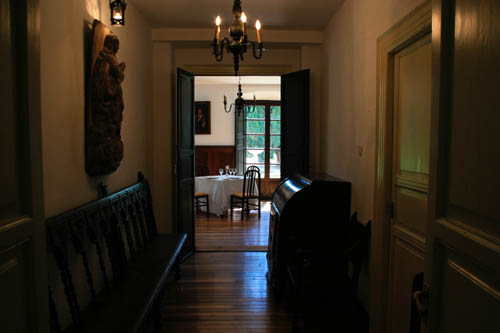
 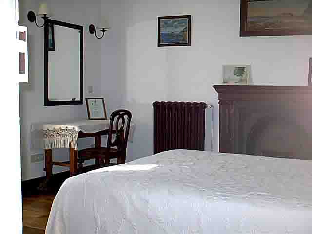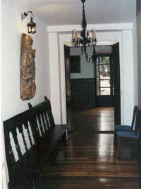
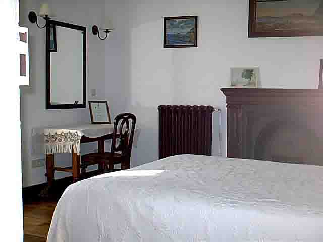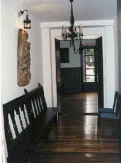
SALÓN BILLAR CUARTO ABUELA PASILLO DE ABAJO
El hotel, en su planta baja está básicamente compuesto por salones para múltiples usos, la oficina, y una cafetería para bodas y otros acontecimientos multitudinarios.
Entrada principal de la casa 1952